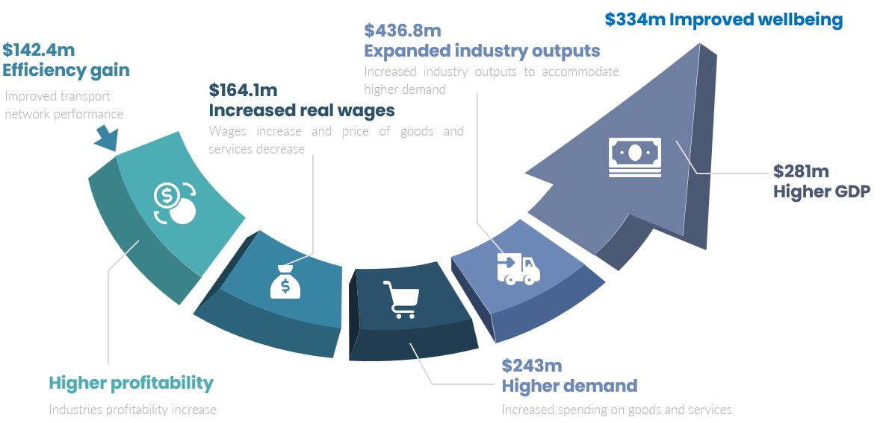

Executive summary
Aotearoa New Zealand suffers from an infrastructure deficit. Without the key infrastructure needed now for our economy to thrive, we deprive future generations from significant economic prosperity. While transformational infrastructure projects necessitate time to be developed into sound technical solutions to our needs, many New Zealand projects are further delayed by policy decision and financing constraints.
In this novel application of the infrastructure Wider Economic Benefits approach, we quantify the cost to society of these further delays for the first time, by using the example of the Waikato Expressway. We used our subregional CGE model to estimate the downstream benefits of the Expressway. At a high-level, results of our analysis quantify the annual benefits of having the Waikato Expressway in the economy. Without the expressway in function as early as possible, $334 million of economic benefits were forgone each year.
Figure 1 Efficient infrastructure decision-making process of the Waikato Expressway led to economic gains and improved wellbeing outcomes for New Zealand communities

Note: The estimated figures are not additive. The sum of benefits is equal to $334m per annum, which includes the identified economic and safety benefits.
We investigated the completion timeframe for a range of projects across New Zealand and compared the completion timeframe for a couple of similar projects across Australia and New Zealand. Accordingly, we suggest that there is a potential for a minimum 7-year timesaving by decreasing the current 15-year completion timeframe to 8 years. Applying this timesaving to the Waikato Expressway indicates that the New Zealand economy would have secured $2.3 billion of benefits from improving the IDM process. This implies that the delays have led to a minimum forgone benefits of 1.2 times the total capital cost of the project (of about $1.9 billion). To put it in context, the estimated forgone benefit for the Waikato Expressway is almost equal to the Climate Emergency Response Fund for transport, energy and industry in The Budget 2022 and significantly higher than the capital cost of the health infrastructure ($1.3 billion).
There is a range of useful policy directions that can help overcome this costly problem in the medium-term.
There are various uncertainties leading to decision-making delays.
Delays are caused by a range of uncertainties at the planning phase, including demographic and population, macroeconomic, technological, climate change and political uncertainties.
Regulator changes and policy frameworks are in the positive direction, but it will take time to become effective.
A range of factors lead to delays in the decision-making process, including:1
Poor coordination amongst the organisations making decisions.
Consenting delays driven by various factors.
Effective financing arrangements, including, for example, public private partnership (PPP).
The monopoly power of councils in providing infrastructure to service land.
The RMA planning process (and infrastructure provision).
Various regulatory changes and policy framework intend to address this costly issue. This includes the directions provided by the Infrastructure Strategy, Resource Management (RM) reform, and the National Policy Statement on Urban Environment (NPS-UD 2020). Most importantly, we suggest that the following objectives have significant implications for the delays in the planning phase:
To improve transparency through providing national direction, and inclusivity through local devolution.
To increase the quality of advice through careful considerations of scenarios and pathways, and by accounting for separation and sequencing of options.
However, these policy changes are in their early stages and will potentially take a decade until they are implemented.
Aotearoa New Zealand can secure these forgone benefits
Planning is an essential phase of decision-making. To ensure that perfection is not going in the way of good, it is critical to add further flexibility in the decision-making process to improve the timing of decisions. Principal Economics (2022a investigated the use of adaptive decision-making to provide further flexibility in the planning phase. The report suggested a range of methods for considering all possible outcomes when selecting options for further investigation. This implies that there are times when the two-stage (or multi-stage) phasing of developments provides the appropriate manner to resolve economic, political and/or technological uncertainties ahead of further irreversible investments, thereby reducing the chance of a white elephant scenario.
To ensure best use of time, we suggest measuring the magnitude of the costs of delays, and monitoring those costs during the decision-making process. This report provides an estimate of the cost of delays using the Waikato Expressway as its case study.
We suggest addressing uncertainties and monitoring costs of delays in the decision-making process – the next steps:
Uncertainty is an important driver for delays. We suggest providing flexibility in the decision-making process to push past the uncertainty. We suggest new evaluation and (adaptive) decision-making tools can be developed from our findings to study and assess if the risks and financing costs of fast-tracking infrastructure projects are worth taking or not.
For prioritisation of investments, it is important to compare apples with apples. We suggest considering an extra portfolio for ‘long-term investments’. Also, it will be helpful to consider evaluation methods for nation building programmes as a package. This needs to be investigated further in a future study.
We acknowledge that there are potential benefits associated with further investigations during the initiation and planning phases, by improving the initial idea and accounting for a wider range of uncertainties. It is unclear whether the benefits outweigh the costs. Identifying and estimating the potential benefits from delaying a decision is beyond the scope of our assessment and could be investigated in a future study.
Our investigation of the potential time savings from an efficient decision-making process suggested a 15-to-eight rule could be applied. This time saving calculation is based on a few comparable examples identified in New Zealand and Australia. In case of the Waikato Expressway, our investigation suggested that the decision-making process could be up to 20 years shorter (applying the 15-to-eight rule). Benefits of infrastructure projects vary significantly depending on the features of impact area. We suggest that our estimate of forgone benefits from one year delay in decision-making for the Expressway provides an indicative figure for the costs associated with delays in decision-making of a reasonable infrastructure project. Future research could apply our method and further investigate the potential time savings using a wider range of examples.